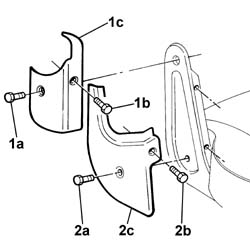
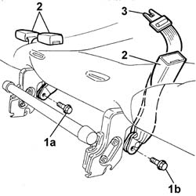
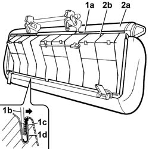
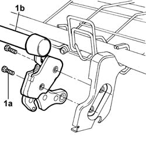
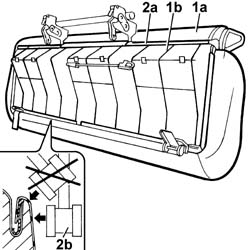
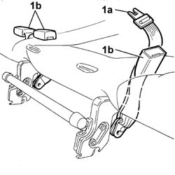
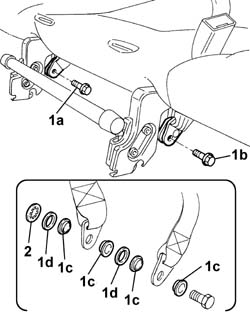

7050A56 rear seat cushion ribbing - r r
- Path
- Procedures > 70 FITTINGS > 7050 REAR SEATS > 7050A rear seat assembly > 7050A56 rear seat cushion ribbing - r r
- Kind
- repair procedure (removal / refitting; the operation number is the code)
- Applies to
- all engines; all production periods
- Interactive page
- https://sloeber94.github.io/elrnDB-fDbl/en/#/2585204
Applies to: all engines; all production periods; only with equipment: Doblò trim level
 Removing
Removing
 Refitting
RefittingOp. 7050A20 ONE-PIECE REAR SEAT CUSHION - R.R.
1. Undo the bolt (1a) and (1b) and remove the top cover (1c).
2. Undo the bolt (2a) and (2b) and remove the bottom cover (2c).
Carry out the same operations for the remaining side covers.

Applies to: all engines; all production periods; only with equipment: Doblò trim level
1. Undo the fixing bolts (1a) and (1b), saving the internal spacers.
2. Withdraw the rear seat belt anchorages.
3. Withdraw the central rear seat belt.

Applies to: all engines; all production periods; only with equipment: Doblò trim level
1. Prise off the whole cover surround (1a) using an ordinary screwdriver with blade of appropriate dimensions (1b), so as to open the channel (1c) and release the cover profile (1d).
2. Separate the rear cushion (2a) from the frame (2b).

Applies to: all engines; all production periods; only with equipment: Doblò trim level
1. Undo the bolts (1a) and remove the rear seat engagement device (1b).

Applies to: all engines; all production periods; only with equipment: Doblò trim level
Refitting
RemovingFit the rear seat release lever and secure it with its bolts.
1. Fit the cover (1a) on the frame (1b).
2. Fit the cover surround (1a) in its seating and hammer down the channel using a rubber hammer (1b).

Applies to: all engines; all production periods; only with equipment: Doblò trim level
1. Refit the central rear seat belt (1a) and the rear seat belt anchorages (1b) in their seatings.

Applies to: all engines; all production periods; only with equipment: Doblò trim level
1. Tighten the fixing bolts (1a) and (1b), fitting the plastic spacers (1c) and washers (1d), as shown in the figure.
2. Fit the retaining washer.

Applies to: all engines; all production periods; only with equipment: Doblò trim level
From both sides, fit the top and bottom covers and secure them with the bolts.